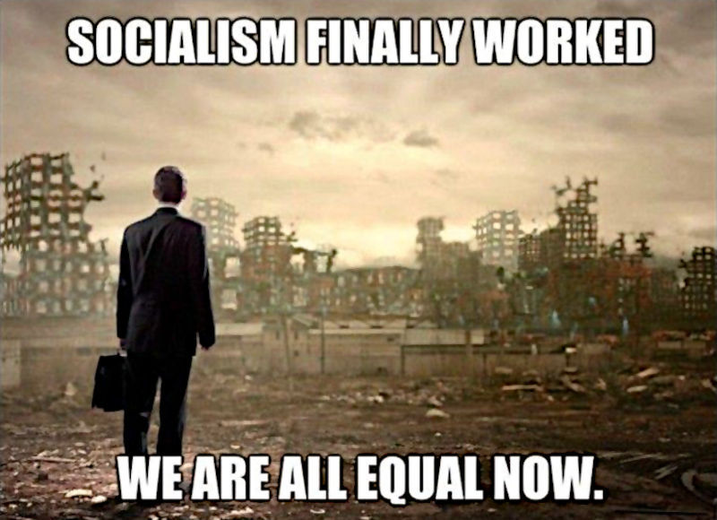

War vs panem et circenses socialism
Published on LinkedIn on the same day.
Stupidity kills, not socialism
That's war, depicted in the image.
Why attack "socialism", the idea that everyone has a piece of bread to eat, some fresh water, a decent care when ill, and more in general that the basic needs met while
all others needs can be the engine for capitalism?
It is fine to give a price/value to a bottle of water, but should it be
also necessary to kill people by drought because we cannot accept the idea that there can exist a "basic quota" as per human right?
By the way, historically speaking "socialism" is the magic word that communism leveraged to market itself.
Switzerland is a socialist de-facto country, while Sweden is a socialist by politics country. Unsurprisingly Switzerland is more wealthy and safer than Sweden in which a bit of ideology remained about the misconception of socialism.
Hey, do you know that "
socialism" derives from "
society"? Really!
Without "socialism" we would live in a society of people who do not give a f*ck when we are dying in the middle of a street, for whatever reason.
In a "non-socialist" family, your wife would just evaluate the death-insurance premium versus the negative balance to call an ambulance and face an hospital degency.
You might not know, but understanding.
The "
panem et circenses" socialism ruled the world for centuries. And no, it never jeopardised the jearchy order in any way but stabilised it.
Understanding is not an option, unless stupidity. →
g.co
Share alike
© 2025, Roberto A. Foglietta <roberto.foglietta@gmail.com>, CC BY-NC-ND 4.0